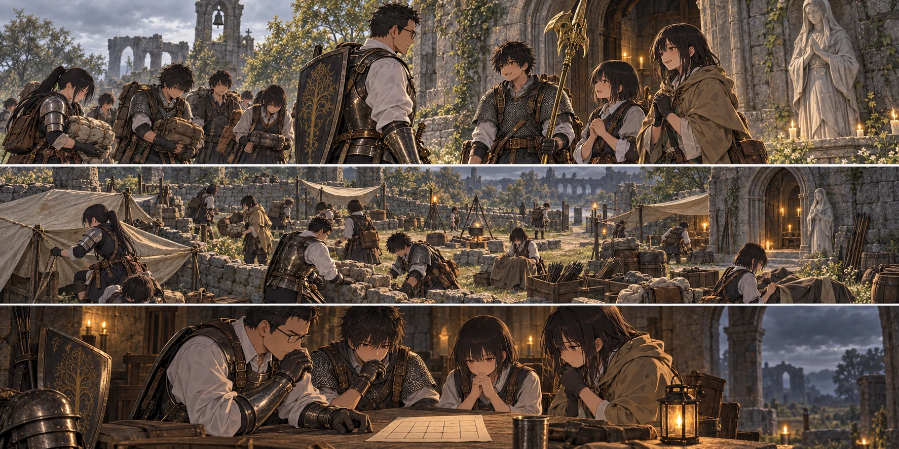

DAY89 / TURN1−99
戻る日を、守る。

先生「間に合うと言い切れない。だから、何日を何に使うかは隠さない」
【DAY89｜朝、帰還】大橋の祝福の光が薄れると、風の匂いが変わった。浮いた石も、途切れない竜巻もない。教会の前で、結衣が十三人の顔を見ていた。「お帰りなさい」。勝ったのかと聞くより先に、その言葉が出た。
先生は剣を下げ、答えた。「ただいま。門番は倒した。奥の相手には、届かなかった」。少し静かになった。それから翼が荷物を受け取り、凛が朝の配膳へ呼んだ。勝った時にだけ戻ってよい場所ではない。その当たり前のことが、今朝はひどくありがたかった。
【全員の仕事】今日は第三隊も狩りに出ない。食料はある。日中の時間と、戻ってきた手を、明日の夜へ使う。十三人の遠征隊、六人の調達隊、十四人の教会組。全員で三十三人。先生は遠征組だけを輪の中心にせず、皆の仕事が見える所へ道具を置いた。
カーレから矢を百本、雨を避ける布と紐を一組買い足した。「飛ばされないようにな」。短い助言を受けて、誠が縛る場所を見に行く。お金で城壁を一晩に買うことはできないが、足りない布を足すことはできる。今日はその範囲を、確実に終わらせる。
武具と衣類は三十六点を補修した。先生の剣も、生徒の槍も、狩りに使う航の弓も同じ机に並ぶ。刃や柄の傷、擦れた服、緩んだ紐。補修代は三百六十ルーン。新たな強化段階へ進む作業ではない。今ある物を、明日も使える状態へ戻す。
橋の門番が残した異形の竜の防具は、いったん共同保管とした。強そうだからと先生の鎧の上へ重ねれば、黒き剣を避けられる身体になるわけではない。誰に合うか、重さをどう受けるか。試す前から装備したことにはしなかった。
【共同作業｜2d6＝4・4＋4＝12】誠は、遠くから見ると壁になっている場所にも風が抜けることを知っていた。低い開口部へ石を足し、寝床へ直接吹き込まないよう布を張る。天幕の紐を結び直し、水が物資へ流れ込まない向きに雨樋を直した。高い所へ誰かを登らせる工事はしない。
「そこは塞がない」。誠が通路を指すと、陸が抱えていた石を別の場所へ運んだ。守りを厚くするほど、逃げ道まで狭くしてしまいそうになる。赤月に何が来るかはまだわからない。だからこそ、ここにいても、ここを出ても動けるようにする。
花と千夏は矢を分け、盾役は夜に通る幅を身体で確かめた。葵と紬は回復が届く場所と、荷物で塞いではいけない場所を皆へ伝える。味方が倒れた時、誰か一人が気づけばよい配置にはしなかった。昨日の戦いで声を繋いだことを、教会の中でも使った。
陽太は槍を傍らに置き、紐を結ぶ手を止めた。「黒炎、昨日は出せませんでした」。隣の誠が顔を上げる。「出せなかったのと、出さなかったの、どっち？」。陽太は少し考えた。「……出したら危ないと思った」。誠は頷いて、紐の端を渡した。「じゃあ、次は出せる場所を作るんだね」。
【残りを数える】夕方、先生は日数を書いた紙を皆の前へ広げた。明日が九十日。百日目は予備日ではなく、この世界が終わる日だ。使えるのは九十九日まで。今日が終われば残り十日で、赤月の一日を越えた後は九日になる。
「間に合うと言い切れない。だから、何日を何に使うかは隠さない」。先生は九十一日へ、マリケス再挑戦と書く。次の三日は、もし勝って灰都へ進めた場合の道と連戦へ。九十五日を最終決戦の仮目標にし、九十六から九十九を遅れと救援に残す。予定の文字は、勝った印ではなかった。
昨日と同じ失敗をもう一度すれば、予備が減る。負傷で動けない者が出れば、もっと減る。新たな死者が出た時に、ただ日程どおり進むわけにもいかない。先生はそれも紙へ書いた。見ないようにしていた不安が、数字と場所を持って皆の前へ出た。
蓮が大橋の印を指した。「でも、ここまでは戻れるんですよね」。先生は頷いた。十三人が自分で行って登録した祝福は残っている。門番も倒している。次の一日を、教会から長い徒歩の移動で使い切らずに済む。それは勝てなかった日の中で、確かに残った前進だった。
マリケスには、一つの場所へ皆を集めず、着地の後だけ攻撃を繋ぐ。先生が追い続ける間に、回復役まで引きずられて走らないようにする。陽太の黒炎は、前の者が隙を作って初めて候補にする。昨日足りなかった一歩を、ただ強くなれば埋まるという言葉だけで済ませなかった。
【赤月の前夜】空は曇っていた。まだ赤い月はない。赤い雨も降っていない。教会の低い隙間を布が覆い、矢はすぐ取り出せる場所にあり、寝床から出口への道は空いていた。外敵に絶対破られない砦にはなっていない。それでも、昨日より守れる場所になった。
財布は六千三百二十四ルーン、矢四百九十六本、食料九十五食分。飲用水は簡略台帳で六・五リットルを保存し、日中の取水分はその都度配給した。先生は最後に見張りの交代を確かめ、ようやく腰を下ろした。明日の夜を、全員で迎える。そのために帰ってきた。
今回の判定記録
| 判定 | 出目 | 補正 | 合計 |
|---|
| cooperation | 4+4 | 4 | 12 |
抽選前の条件 · 抽選結果